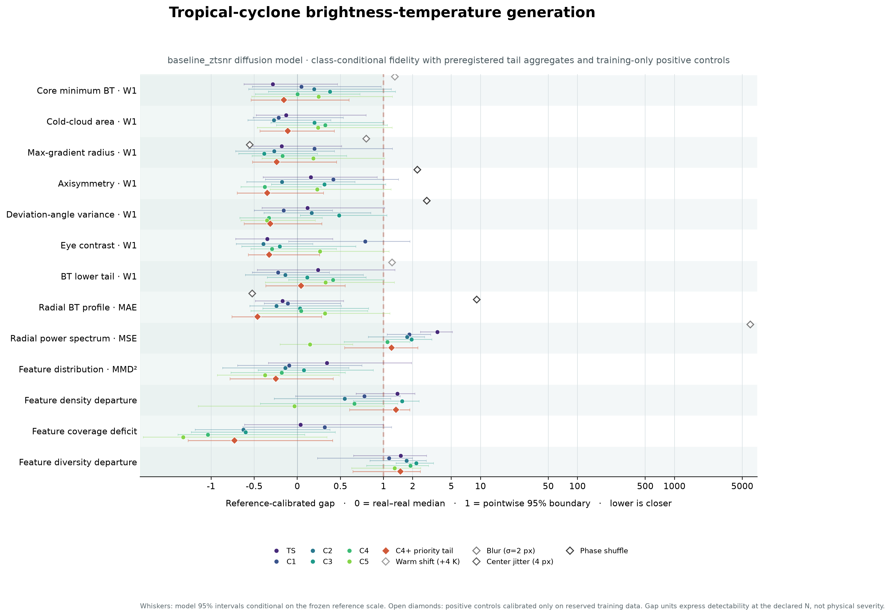
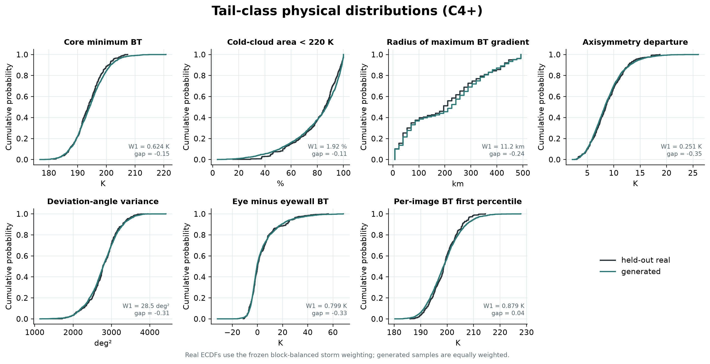
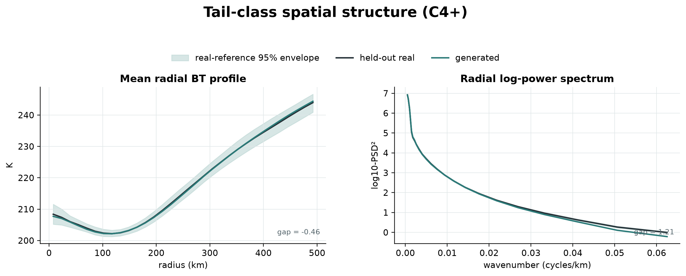
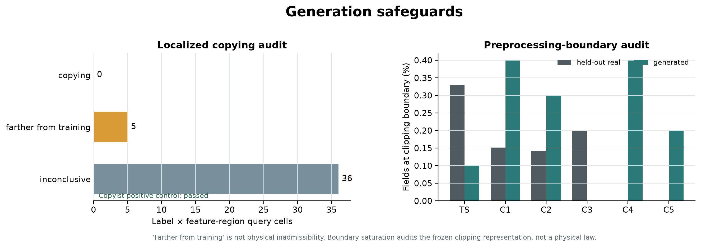

This is the interpretation-first GAUGE output intended for a paper results section. The complete machine report, class matrix, numerical tables, and diagnostic drill-downs remain available underneath it.

All six native intensity classes, the preregistered C4+ tail aggregate, and training-only positive controls on one scale.

Block-balanced C4+ empirical distributions for every scalar physical functional.

Radial-profile and power-spectrum drill-downs for the priority C4+ stratum.

A compact copying audit and preprocessing-boundary diagnostic.
Frozen configuration hash: 9d4bdd409257157f.